Propuesta final · lanzamiento Meta Ads
Cada vez que alguien envía el formulario de nuestras landings, Meta lo cuenta como un Lead. Eso es lo que le pedimos que busque, y lo que medimos de punta a punta, hasta la reunión con Bastián.
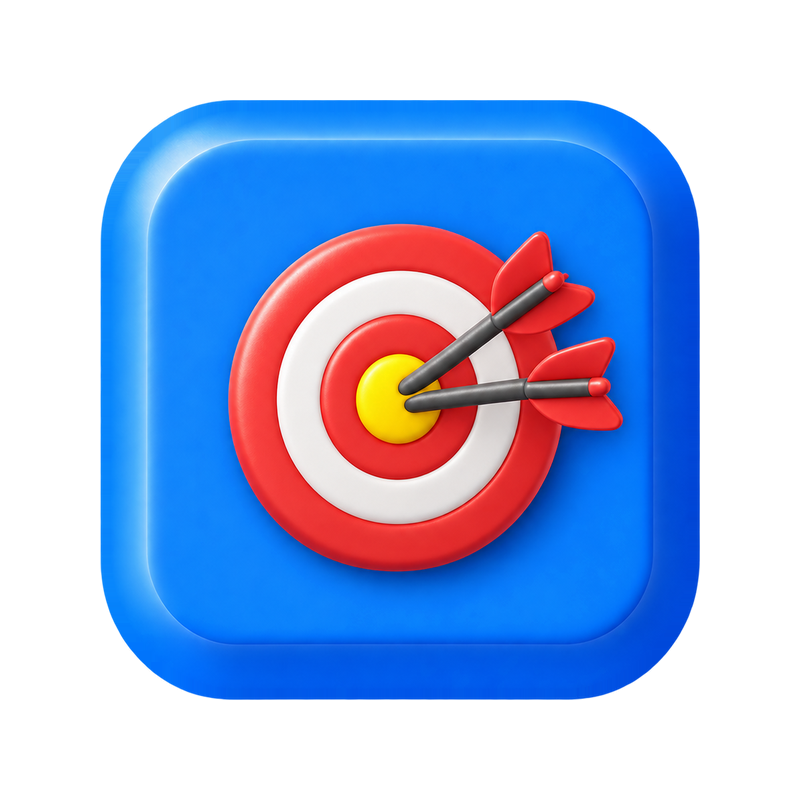
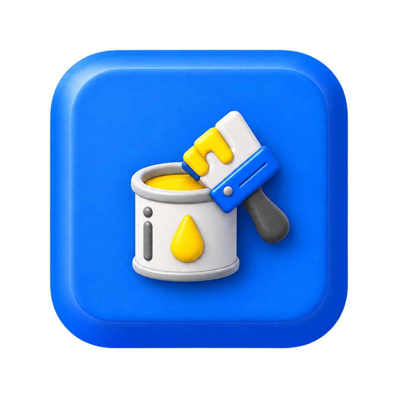
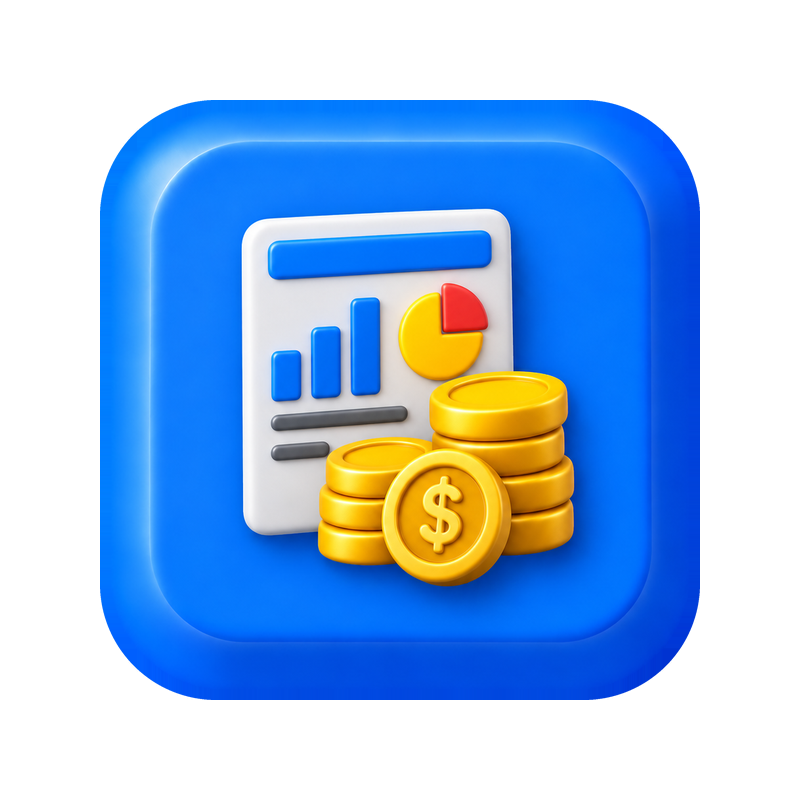
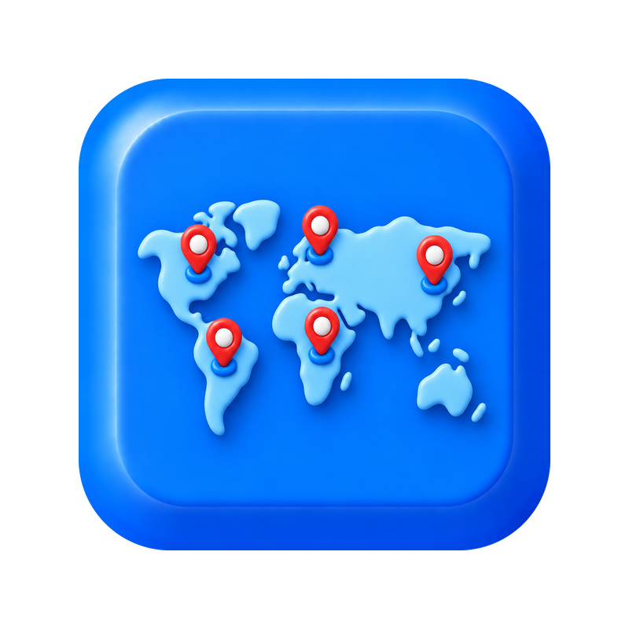
El ecosistema completo
2 conjuntos, 4 anuncios, cada uno con su UTM.
El Lead viaja desde el navegador y desde el servidor con el mismo event_id, más las cookies fbp/fbc y el fbclid.
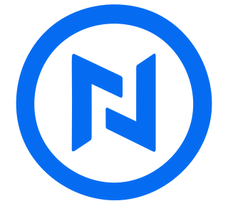
soluciones.neisstech.com/pintura y /demarcacion-virtual. Formulario corto; al enviar abre WhatsApp con el mensaje listo.
Es el comprador principal de la campaña: lo que Meta optimiza y lo que todos contamos igual.
Respaldo de cada formulario
Registro legible para el equipo
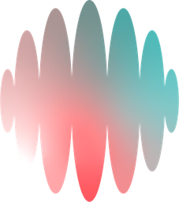
Crea el lead con su campaña y UTM
Configuración → Campañas, sync cada minuto
Responde por WhatsApp, llama y escribe por correo. Califica al lead y agenda la reunión.
Ads · Remarketing · Pre-reunión (detalle en la lámina 3)
Calendario + Meet, 60 min · Mide: reuniones agendadas
Contacto al agendar, vía Medula
Aviso de reunión y reportes diarios
Quién atiende a los leads
Qué le puede pasar a un lead
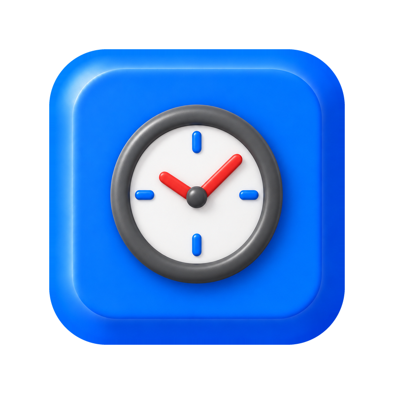
A los 15 min → María · RemarketingCómo sabremos si funciona
[N] · Gasto acumulado: $[X][N] · Costo por lead: $[X][N] · en conversación [N] · reuniones [N][N][N] · reuniones agendadas [N]$[X] · costo por lead del día $[X]Dudas que es normal tener
Propuesta: $10.000 diarios por conjunto ($20.000 en total). Meta cobra solo lo gastado y se puede pausar o bajar el presupuesto cuando queramos. Nexor cuesta US$500 al mes con 500 leads contactados incluidos.
María, una asistente virtual del equipo comercial: responde por WhatsApp, llama y escribe por correo. Si alguien pregunta, ella dice que es asistente virtual. Bastián toma la reunión.
A los 15 minutos entra Remarketing: llamada, WhatsApp y correo durante 7 días, en horario laboral. Si el teléfono está malo, el correo lo rescata.
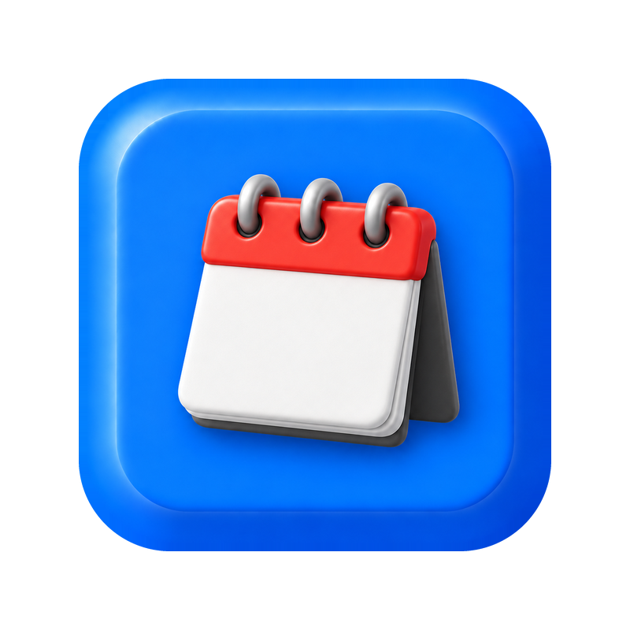
Le llega una invitación de calendario con Meet, de lunes a viernes entre 9 y 16 h, de 60 minutos y con al menos 4 horas de aviso. También le avisa Jacinta por Telegram.
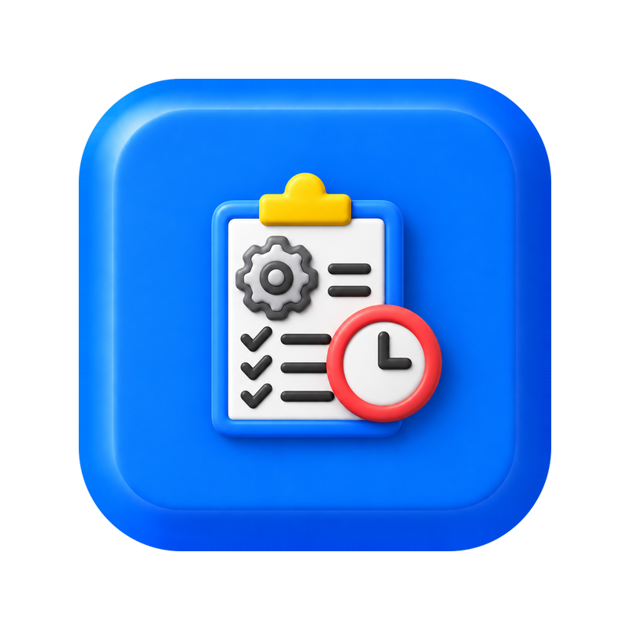
Sí. Los anuncios se pausan en Meta y los agentes en Nexor, cada uno con un clic. El CRM sigue registrando lo que ya entró. Mientras no demos el check, la campaña nueva queda en pausa.
Solo a quien envía sus datos en el formulario. Quien dice «no contactar» o «no me interesa» se detiene y no se vuelve a escribir. Hay topes diarios y WhatsApp usa plantillas aprobadas por Meta.
Con costo por lead, % contactados, tiempo al primer contacto y reuniones. Meta necesita unas semanas y un buen número de Leads para aprender, así que no se juzga en 2 o 3 días. No prometemos cifras.
Nombre, empresa, cargo, teléfono y correo quedan en Supabase, la hoja de Google, Nexor y el CRM. A Meta le enviamos correo y teléfono cifrados (hash) y cookies de atribución, para medir y optimizar.
Plan de lanzamiento
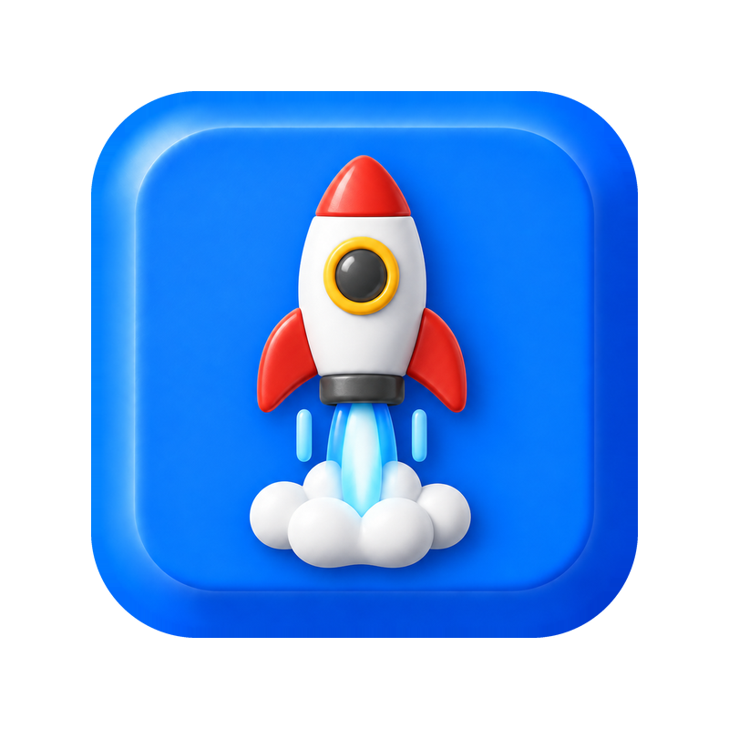
Falta para lanzarCon su check activamos la campaña apenas termine la prueba con César.